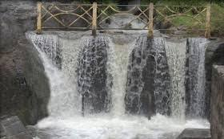

Home
Mainfalls
Old courtallam
Five Falls
Tiger falls
Tiger falls
- It is on the way to old Courtallam.
- It is around 1 km away from main falls.
- This is a artificial created falls where they are mostly preferred by children.
- It is also a very safe place to take bath but only at peak season water availability is there.
